Skazani na Showshank
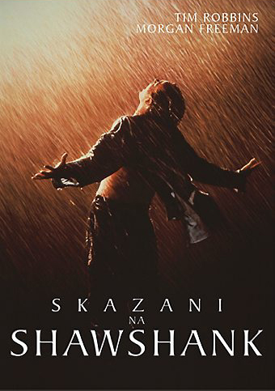
Opis:
Adaptacja opowiadania Stephena Kinga. Historia niesłusznie skazanego na dożywocie bankiera, który musi przeżyć w brutalnym świecie rządzonym przez strażników i współwięźniów.
Gatunek: dramat
Rok: 1994
Ojciec chrzestny
Opis:
Opowieść o nowojorskiej rodzinie mafijnej. Starzejący się Don Corleone pragnie przekazać władzę swojemu synowi.
Gatunek: dramat, gangsterski
Rok: 1972
Nietykalni
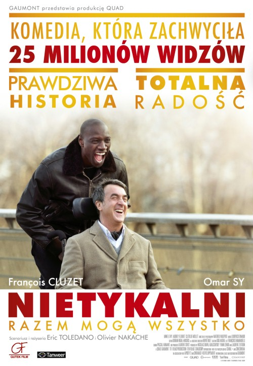
Opis:
Sparaliżowany milioner zatrudnia do opieki młodego chłopaka z przedmieścia, który właśnie wyszedł z więzienia.
Gatunek: dramat, biograficzny, komedia
Rok: 2011
Shrek
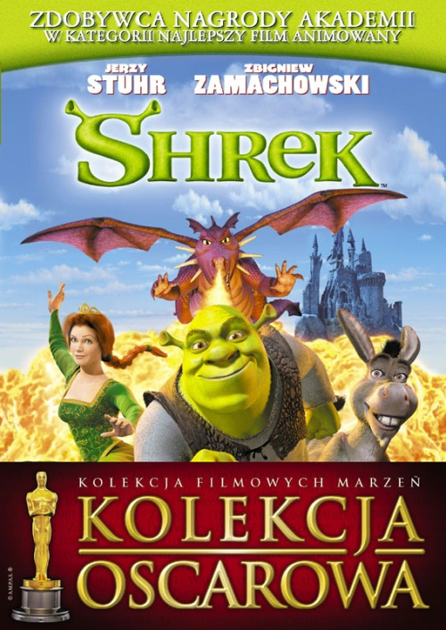
Opis:
By odzyskać swój dom, brzydki ogr z gadatliwym osłem wyruszają uwolnić piękną księżniczkę.
Gatunek: animacja, familijny, komedia
Rok: 2001
Władca Pierścieni: Powrót króla
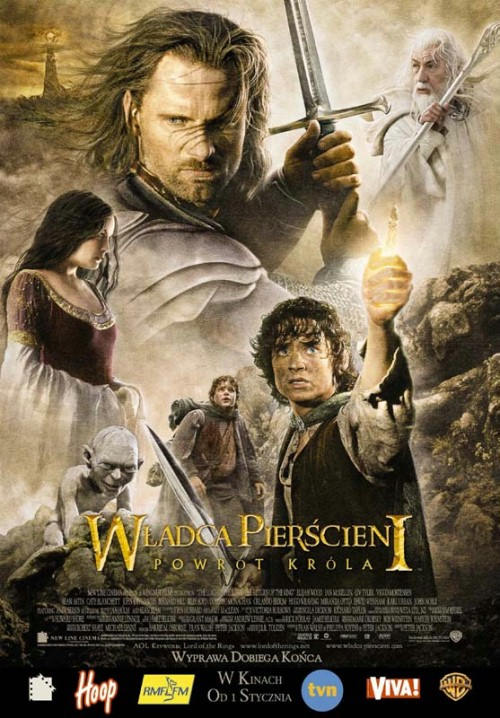
Opis:
Zwieńczenie filmowej trylogii wg powieści Tolkiena. Aragorn jednoczy siły Śródziemia szykując się do bitwy, aby odwrócić uwagę Saurona od podążających w kierunku Góry Przeznaczenia hobbitów.
Gatunek: fantasy, przygodowy
Rok: 2003
Władca Pierścieni: Dwie wieże
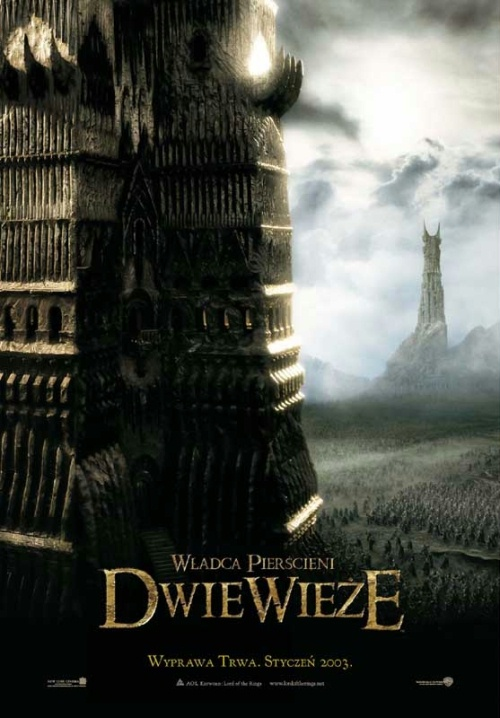
Opis:
Drużyna Pierścienia zostaje rozbita, lecz zdesperowany Frodo za wszelką cenę chce wypełnić powierzone mu zadanie. Aragorn z towarzyszami przygotowuje się, by odeprzeć atak hord Sarumana.
Gatunek: fantasy, przygodowy
Rok: 2002
Władca Pierścieni: Drużyna pierścienia
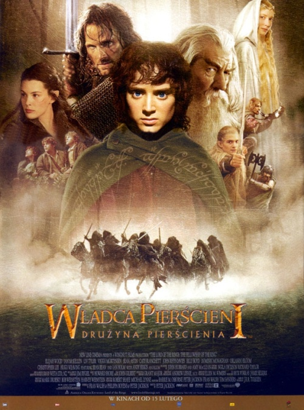
Opis:
Podróż hobbita z Shire i jego ośmiu towarzyszy, której celem jest zniszczenie potężnego pierścienia pożądanego przez Czarnego Władcę - Saurona.
Gatunek: fantasy, przygodowy
Rok: 2001
Django
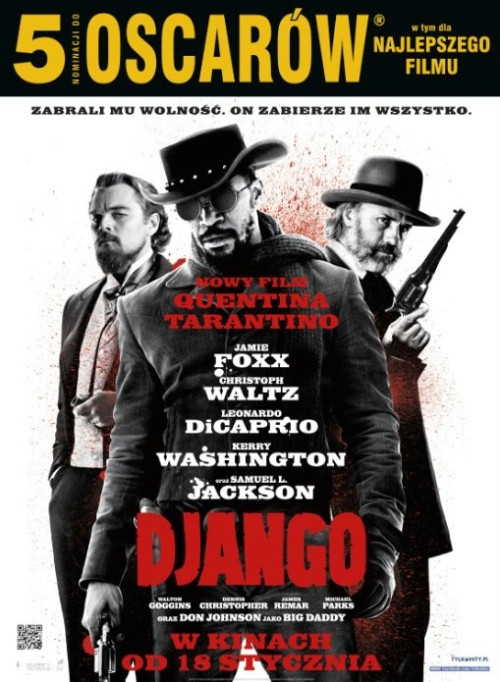
Opis:
Łowca nagród Schultz i czarnoskóry niewolnik Django wyruszają w podróż, aby odbić żonę tego drugiego z rąk bezlitosnego Calvina Candie'ego.
Gatunek: dramat, western
Rok: 2012
Incepcja
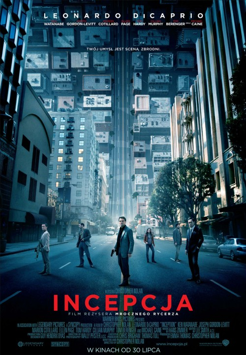
Opis:
Czasy, gdy technologia pozwala na wchodzenie w świat snów. Złodziej Cobb ma za zadanie wszczepić myśl do śpiącego umysłu.
Gatunek: surrealistyczny, thriller, sci-fi
Rok: 2010
Mroczny rycerz

Opis:
Batman, z pomocą komisarza Gordona i prokuratora Harveya Denta, występuje przeciwko przerażającemu i nieobliczalnemu Jokerowi, który chce pogrążyć Gotham City w chaosie.
Gatunek: akcja, sci-fi
Rok: 2008
Mroczny rycerz
Opis:
Batman, z pomocą komisarza Gordona i prokuratora Harveya Denta, występuje przeciwko przerażającemu i nieobliczalnemu Jokerowi, który chce pogrążyć Gotham City w chaosie.
Gatunek: akcja, sci-fi
Rok: 2008
Siedem dusz
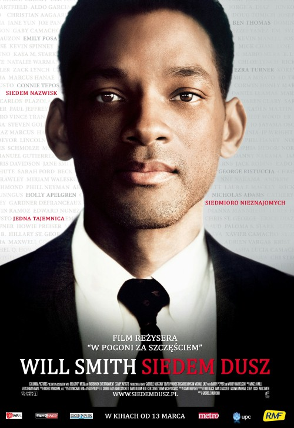
Opis:
Mężczyzna przedstawiający się jako urzędnik podatkowy pojawia się w domach siedmiu śmiertelnie chorych dłużników, by sprawdzić jakimi są ludźmi. Ma dla nich niezwykły dar.
Gatunek: dramat
Rok: 2008
Jak wytresować smoka?
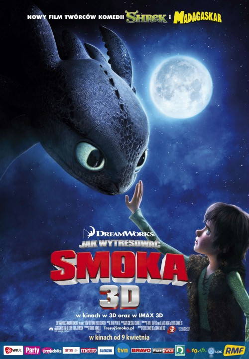
Opis:
Chuderlawy Wiking przewróci porządek w wiosce, kiedy zamiast zabić w ramach inicjacji jakiegoś smoka, zaprzyjaźni się z najgroźniejszym z nich.
Gatunek: animacja, familijny, fantasy, przygodowy
Rok: 2010
Gwiazd naszych wina
Opis:
Cierpiąca na raka tarczycy Hazel za namową rodziców idzie na spotkanie grupy wsparcia. Poznaje tam nastoletniego Gusa, byłego koszykarza z amputowaną nogą.
Gatunek: dramat, romans
Rok: 2014
Czarny łabędź
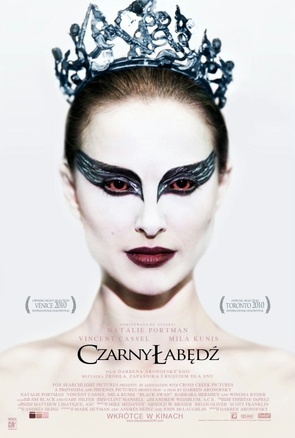
Opis:
Nina desperacko marzy o roli w "Jeziorze łabędzim". Podczas prób do przedstawienia zauważa w zespole dziewczynę wyglądającą jak ona.
Gatunek: dramat, psychologiczny
Rok: 2010
Kraina lodu

Opis:
Kiedy posiadająca moc kontroli nad śniegiem i lodem Elsa sprowadza srogą zimę na swoje królestwo, Anna wyrusza w podróż, aby odszukać siostrę oraz zakończyć pogodowe anomalie.
Gatunek: animacja, familijny, musical, przygodowy
Rok: 2013